Estimate ancestral gene copy numbers given the species phylogeny and counts of orthologous genes present in extant species.
Learning outcomes
What is the difference between tree reconciliation and state reconstruction?
What is gene family ancestral state reconstruction trying to achieve and how?
Using orthologue counts to estimate ancestral gene content
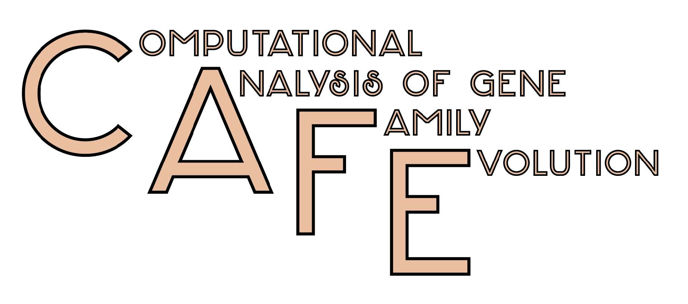
There are a huge range of tools designed for ancestral state reconstructions, you may for example have encountered the R package, phytools. Today we will use CAFE5, a tool specifically designed for working with gene count data to infer ancestral gene contents per gene family.
Before we reconstruct the ancestral state gene content of our species of interest, let’s create a working directory for this exercise, starting by opening a terminal on the Workspace if you’ve not already got one open. Then, from the /workspace/biodivinfo/ directory, create a new directory (mkdir) and navigate into the new directory (cd):
cd /workspace/biodivinfo/
mkdir Session4
cd Session4/
We will continue to work with the same dataset of orthologous groups delineated across 15 beetles from OrthoDB. The main input requirements for CAFE are:
An ultrametric time-calibrated species tree
We have the ultrametric time-calibrated species tree we made earlier: Coleoptera_TimeTree_IDs.tre
This is a version with just the species identifiers not the names. You can fetch it from the data folder:
This table was obtained by downloading and parsing the full table of orthology data from OrthoDB to extract counts of genes per species for Coleoptera-level orthogroups, you can fetch these pre-processed data here:
The table contains rows of orthogroups (blue) with columns of species (green) and all the counts of orthologues per orthogroup per species
For the class the full set of 14‘753 orthogroups has been first filtered to select only orthologous groups found in more than 90% of species (with no restriction on gene copy-number), leaving 6‘824 orthogroups. Note that the species names/identifiers must be the same as those we have in our ultrametric time-calibrated species phylogeny
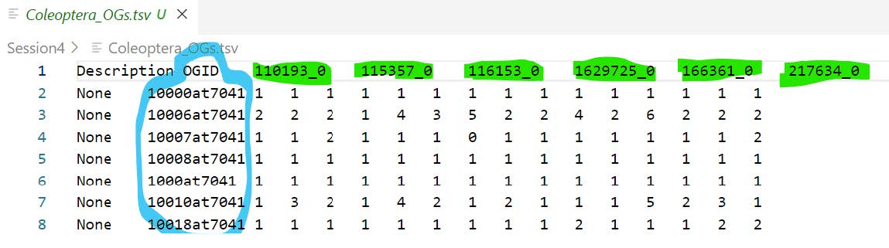
Start by checking out what CAFE needs as command-line options, input, and output names etc. in order to perform an ancestral state reconstruction:
cafe5 -h
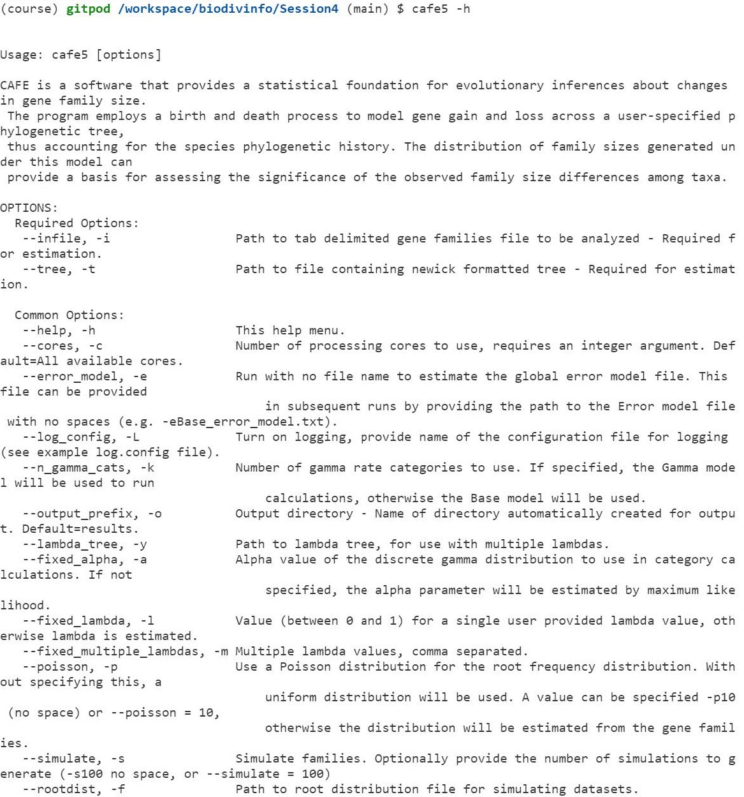
The main input that CAFE needs:
-i, --infile: path to tab delimited gene families file to be analysed
-t, --tree: path to file containing Newick formatted tree
CAFE uses a birth and death process to model gene gain and loss across a user-specified phylogenetic tree. The distribution of family sizes generated under this model provides a basis for assessing the significance of the observed family size differences among taxa. Estimating Lambda (the traditional running of CAFE) performs a maximum likelihood calculation to estimate the most likely rate of change across the entire tree, given all the families and their counts
For a typical CAFE analysis, users are most interested in determining two things:
Which gene families/orthogroups are rapidly evolving?
On which branches of the tree these families are rapidly evolving?
By default, CAFE creates its outputs into a folder called “results”:
ls -l /workspace/biodivinfo/Session4/results
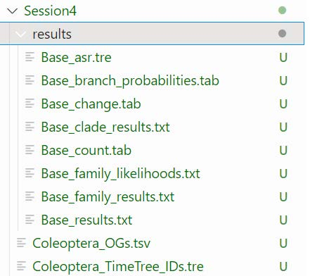
If CAFE failed, you can get the file from the folder with data files for the practical instead
The Base_asr.tre output file contains all orthogroups with the ancestral gene counts mapped to the species tree. You might recognise the first tree as the orthogroup we used to build our first species tree (10000at7041).
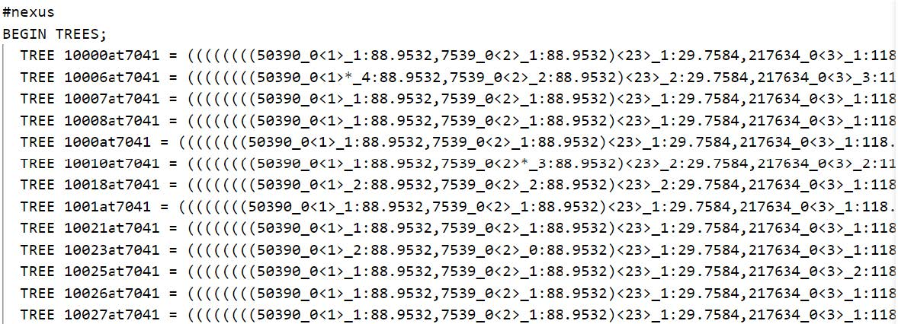
We can get an overview of gains and losses across all families using a script provided by CAFE, cafe5_draw_tree.py:
The .png output files should be in your working directory, you can open them in Gitpod to view numbers of families showing gains or losses across the species tree.
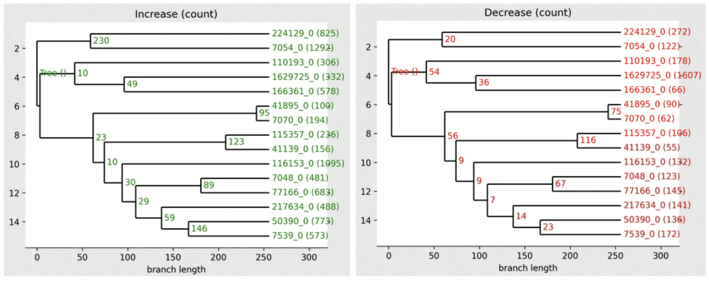
High-resolution version
You can find a better version of the figure on Gitpod at /workspace/biodivinfo/data/Session4/CAFE_gains_tree.png and /workspace/biodivinfo/data/Session4/CAFE_losses_tree.png. Or you can also see them here: gains & losses
Questions:
Which internal node shows the most gains?
Which internal node shows the most losses?
Answer
The node between species 224129 and 7054 shows the most gains (230).
The node between species 115357 and 7070 shows the most losses (116).
A reminder of the species in our tree:
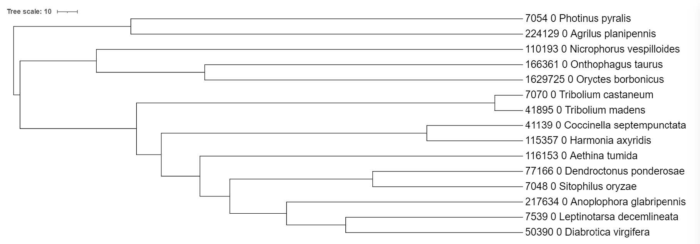
Comparing ancestral gene content estimates with reconciliation results
As a final step we can compare the results from our previous gene-tree-species-tree reconciliation of orthogroup 10261at7041 with those from gene family ancestral state reconstruction.
Extract the gain-loss annotated tree for 10261at7041 from the CAFE results:
grep 10261at7041 results/Base_asr.tre
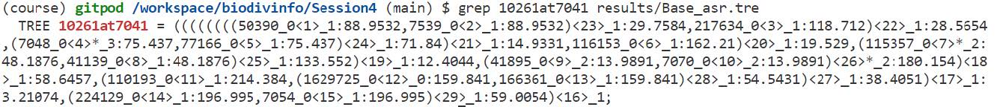
Copy the output of the previous grep command (which is a Newick tree) and open it in iTOL as we did before - note that the Newick tree starts with the first open parenthesis and ends with the semicolon. Use the Advanced Control Panel to Display the Node IDs and view internal node annotations.
Note
You can also find the Newick file on gitpod at: /workspace/biodivinfo/data/Session4/10261at7041_reconstruction.nwk
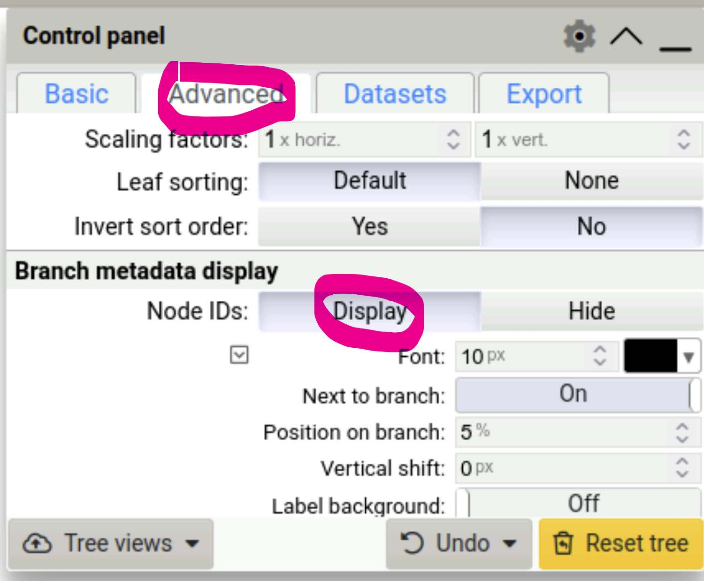
If you did not manage to visualise the tree
You can find it on Gitpod at /workspace/biodivinfo/data/Session4/tree_10261at7041_CAFE.jpg. Or you can directly see it here.
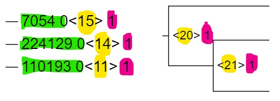
Terminal nodes (leaves) are labelled with the species (green), CAFE’s own numbering of all nodes in the tree (yellow) and finally gene the copy number (pink). Nodes inside the tree are labelled with the internal CAFE numbering of all nodes in the tree (yellow) and the gene the copy number (pink).
Nodes exhibiting significant changes from their ancestral states are indicated with an asterisk (*). We can now place our CAFE estimates next to our treerecs estimates to compare the results from the two approaches:
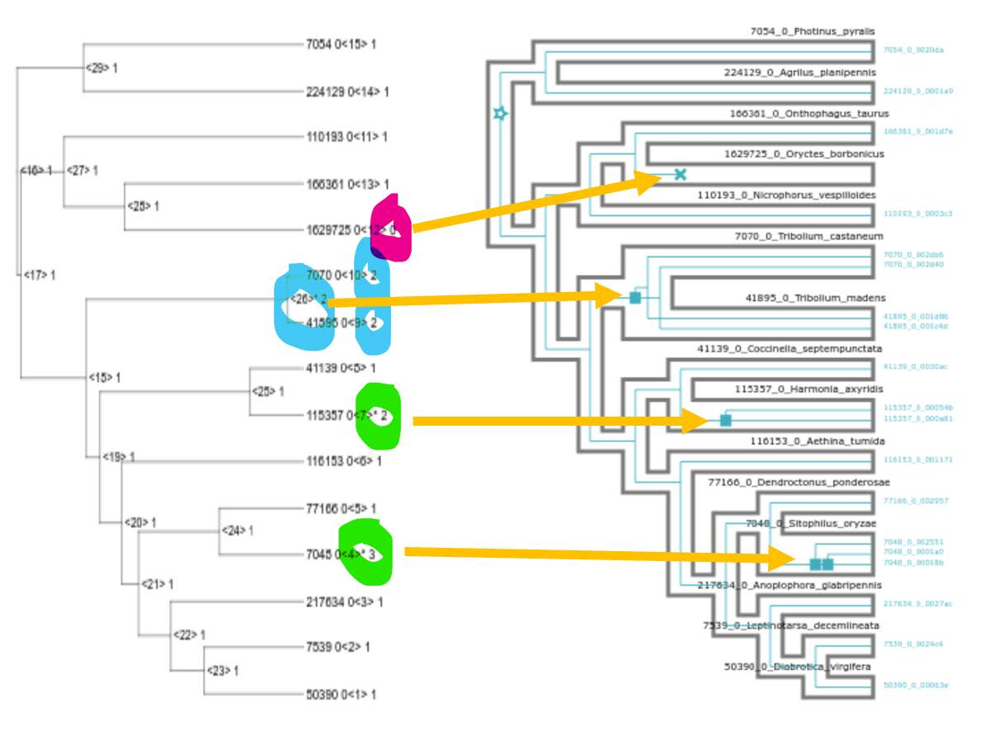
Question: Do the ancestral state reconstructions results (CAFE) agree with the tree reconciliation events (treerecs - after asking it to ignore low-confidence nodes)?
{kind=link}
{kind=link}
{kind=link}